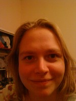

Eline

Mijn naam is Eline Arisse.
Ik ben student aan de Universiteit voor Humanistiek en bezig met mijn bachelor daar.
Onlangs ben ik verhuisd naar Den Haag waar ik ben gaan samenwonen met mijn vriend Ivo (ja, ook van JongMenS!) en hond Chausette. Ik heb sinds kort een baantje bij de nieuwe Estafette biologische winkel in Leidschenveen (Den Haag).
Mijn interesses zijn breed en ik zou het liefst van alles achter elkaar willen doen zoals je dat nog deed op de kleuterschool: tekenen, gymen, spelen, lachen. Van jongs af aan ben ik via mijn moeder in aanraking met spiritualiteit. Dit is altijd zo gebleven doordat ik in mijn tienerjaren op de website www.bovennatuurlijk.com zat, veel boeken erover heb gelezen en op mijn zestiende de cursus Flowering heb gedaan bij de stichting Meer mensen mens in Arnhem. Spiritualiteit is moeilijk te beschrijven en / of in een hokje te stoppen. Het is een manier van leven die in het kort te beschrijven is als bewust proberen te leven naar jezelf en anderen toe. Trefwoorden als liefde, tolerantie, positiviteit en vertrouwen komen daar vaak in voor, maar dat betekent niet dat de tegenstellingen er niet mogen zijn. Het gaat er juist om dat alles er mag zijn. Ja ja..grote woorden..nu nog het doen. Een ieder heeft ermee te maken.
Je zult me verder wel gaan zien en spreken. Dit kan al via mijn e-mail eline.arisse@gmail.com en via Hyves: http://el-ine.hyves.nl
Tot ooit!
Ik ga naar Energy Stones, Jammen en schilderen, Kringgesprek met de stok